Composing a customized RHEL system image
Creating customized system images with Image Builder on Red Hat Enterprise Linux 8
Abstract
Providing feedback on Red Hat documentation
We appreciate your input on our documentation. Please let us know how we could make it better. To do so:
For simple comments on specific passages:
- Make sure you are viewing the documentation in the Multi-page HTML format. In addition, ensure you see the Feedback button in the upper right corner of the document.
- Use your mouse cursor to highlight the part of text that you want to comment on.
- Click the Add Feedback pop-up that appears below the highlighted text.
- Follow the displayed instructions.
For submitting more complex feedback, create a Bugzilla ticket:
- Go to the Bugzilla website.
- As the Component, use Documentation.
- Fill in the Description field with your suggestion for improvement. Include a link to the relevant part(s) of documentation.
- Click Submit Bug.
Chapter 1. Image Builder description
1.1. Introduction to Image Builder
You can use Image Builder to create customized system images of Red Hat Enterprise Linux, including system images prepared for deployment on cloud platforms. Image Builder automatically handles details of setup for each output type and is thus easier to use and faster to work with than manual methods of image creation. You can access Image Builder functionality through a command-line interface in the composer-cli tool, or a graphical user interface in the RHEL 8 web console.
Image Builder runs as a system service lorax-composer. You can interact with this service through two interfaces:
-
CLI tool
composer-clifor running commands in the terminal. Prefer this method. - GUI plugin for the RHEL 8 web console.
1.2. Image Builder terminology
- Blueprint
Blueprints define customized system images by listing packages and customizations that will be part of the system. Blueprints can be edited and they are versioned. When a system image is created from a blueprint, the image is associated with the blueprint in the Image Builder interface of the RHEL 8 web console.
Blueprints are presented to the user as plain text in the Tom’s Obvious, Minimal Language (TOML) format.
- Compose
- Composes are individual builds of a system image, based on a particular version of a particular blueprint. Compose as a term refers to the system image, the logs from its creation, inputs, metadata, and the process itself.
- Customization
- Customizations are specifications for the system, which are not packages. This includes users, groups, and SSH keys.
1.3. Image Builder output formats
Image Builder can create images in multiple output formats shown in the following table.
Table 1.1. Image Builder output formats
| Description | CLI name | file extension |
|---|---|---|
| QEMU QCOW2 Image |
|
|
| Ext4 File System Image |
|
|
| Raw Partitioned Disk Image |
|
|
| Live Bootable ISO |
|
|
| TAR Archive |
|
|
| Amazon Machine Image Disk |
|
|
| Azure Disk Image |
|
|
| VMware Virtual Machine Disk |
|
|
| Openstack |
|
|
1.4. Image Builder system requirements
The lorax tool underlying Image Builder performs a number of potentially insecure and unsafe actions while creating the system images. For this reason, use a virtual machine to run Image Builder.
The environment where Image Builder runs, for example the virtual machine, must meet requirements listed in the following table.
Table 1.2. Image Builder system requirements
| Parameter | Minimal Required Value |
|---|---|
| System type | A dedicated virtual machine |
| Processor | 2 cores |
| Memory | 4 GiB |
| Disk space | 20 GiB |
| Access privileges | Administrator level (root) |
| Network | Connectivity to Internet |
There is no support for creating images on virtual machine directly installed on UEFI systems.
Chapter 2. Installing Image Builder
Before using Image Builder, you must install Image Builder in a virtual machine.
2.1. Installing Image Builder in a virtual machine
To install Image Builder on a dedicated virtual machine, follow these steps:
Prerequisites
- Connect to the virtual machine.
- The virtual machine for Image Builder must be installed, subscribed, and running.
Procedure
Install the Image Builder and other necessary packages on the virtual machine:
- lorax-composer
- composer-cli
- cockpit-composer
- bash-completion
# yum install lorax-composer composer-cli cockpit-composer bash-completion
The web console is installed as a dependency of the cockpit-composer package.
Enable Image Builder to start after each reboot:
# systemctl enable lorax-composer.socket # systemctl enable cockpit.socket
The
lorax-composerandcockpitservices start automatically on first access.Configure the system firewall to allow access to the web console:
# firewall-cmd --add-service=cockpit && firewall-cmd --add-service=cockpit --permanent
Load the shell configuration script so that the autocomplete feature for the
composer-clicommand starts working immediately without reboot:$ source /etc/bash_completion.d/composer-cli
Chapter 3. Creating system images with Image Builder command-line interface
Image Builder is a tool for creating custom system images. To control Image Builder and create your custom system images, use the command-line interface which is currently the preferred method to use Image Builder.
3.1. Image Builder command-line interface
Image Builder command-line interface is currently the preferred method to use Image Builder. It offers more functionality than the Web console interface. To use this interface, run the composer-cli command with suitable options and subcommands.
The workflow for the command-line interface can be summarized as follows:
- Export (save) the blueprint definition to a plain text file
- Edit this file in a text editor
- Import (push) the blueprint text file back into Image Builder
- Run a compose to build an image from the blueprint
- Export the image file to download it
Apart from the basic subcommands to achieve this procedure, the composer-cli command offers many subcommands to examine the state of configured blueprints and composes.
To run the composer-cli command, user must be in the weldr or root groups.
3.2. Creating an Image Builder blueprint with command-line interface
This procedure describes how to create a new Image Builder blueprint using the command-line interface.
Procedure
Create a plain text file with the following contents:
name = "BLUEPRINT-NAME" description = "LONG FORM DESCRIPTION TEXT" version = "0.0.1" modules = [] groups = []
Replace BLUEPRINT-NAME and LONG FORM DESCRIPTION TEXT with a name and description for your blueprint.
Replace 0.0.1 with a version number according to the Semantic Versioning scheme.
For every package that you want to be included in the blueprint, add the following lines to the file:
[[packages]] name = "package-name" version = "package-version"
Replace package-name with name of the package, such as httpd, gdb-doc, or coreutils.
Replace package-version with a version to use. This field supports
dnfversion specifications:- For a specific version, use the exact version number such as 8.30.
- For latest available version, use the asterisk *.
- For a latest minor version, use format such as 8..
Blueprints can be customized in a number of ways. For this example, Simultaneous Multi Threading (SMT) can be disabled by performing the steps below. For additional customizations available, please see Section 3.7, “Supported Image Customizations”.
[customizations.kernel] append = "nosmt=force"
- Save the file as BLUEPRINT-NAME.toml and close the text editor.
Push (import) the blueprint:
# composer-cli blueprints push BLUEPRINT-NAME.tomlReplace BLUEPRINT-NAME with the value you used in previous steps.
To verify that the blueprint has been pushed and exists, list the existing blueprints:
# composer-cli blueprints list
Check whether the components and versions listed in the blueprint and their dependencies are valid:
# composer-cli blueprints depsolve BLUEPRINT-NAME
3.3. Editing an Image Builder blueprint with command-line interface
This procedure describes how to edit an existing Image Builder blueprint in the command-line interface.
Procedure
Save (export) the blueprint to a local text file:
# composer-cli blueprints save BLUEPRINT-NAME- Edit the BLUEPRINT-NAME.toml file with a text editor of your choice and make your changes.
Before finishing with the edits, make sure the file is a valid blueprint:
Remove this line, if present:
packages = []
- Increase the version number. Remember that Image Builder blueprint versions must use the Semantic Versioning scheme. Note also that if you do not change the version, the patch component of version is increased automatically.
Check if the contents are valid TOML specifications. See the TOML documentation for more information.
NoteTOML documentation is a community product and is not supported by Red Hat. You can report any issues with the tool at https://github.com/toml-lang/toml/issues
- Save the file and close the editor.
Push (import) the blueprint back into Image Builder:
# composer-cli blueprints push BLUEPRINT-NAME.tomlNote that you must supply the file name including the
.tomlextension, while in other commands you use only the name of the blueprint.To verify that the contents uploaded to Image Builder match your edits, list the contents of blueprint:
# composer-cli blueprints show BLUEPRINT-NAMECheck whether the components and versions listed in the blueprint and their dependencies are valid:
# composer-cli blueprints depsolve BLUEPRINT-NAME
3.4. Creating a system image with Image Builder in the command-line interface
This procedure shows how to build a custom image using the Image Builder command-line interface.
Prerequisites
- You have a blueprint prepared for the image.
Procedure
Start the compose:
# composer-cli compose start BLUEPRINT-NAME IMAGE-TYPE
Replace BLUEPRINT-NAME with name of the blueprint, and IMAGE-TYPE with the type of image. For possible values, see output of the
composer-cli compose typescommand.The compose process starts in the background and the UUID of the compose is shown.
Wait until the compose is finished. Please, notice that this may take several minutes.
To check the status of the compose:
# composer-cli compose status
A finished compose shows a status value FINISHED. Identify the compose in the list by its UUID.
Once the compose is finished, download the resulting image file:
# composer-cli compose image UUIDReplace UUID with the UUID value shown in the previous steps.
Alternatively, you can access the image file directly under the path
/var/lib/lorax/composer/results/UUID/.You can also download the logs using the
composer-cli compose logs UUIDcommand, or the metadata using thecomposer-cli compose metadata UUIDcommand.
3.5. Basic Image Builder command-line commands
The Image Builder command-line interface offers the following subcommands.
Blueprint manipulation
- List all available blueprints
# composer-cli blueprints list
- Show a blueprint contents in the TOML format
# composer-cli blueprints show BLUEPRINT-NAME- Save (export) blueprint contents in the TOML format into a file
# composer-cli blueprints save BLUEPRINT-NAME- Remove a blueprint
# composer-cli blueprints delete BLUEPRINT-NAME- Push (import) a blueprint file in the TOML format into Image Builder
# composer-cli blueprints push BLUEPRINT-NAME
Composing images from blueprints
- Start a compose
# composer-cli compose start BLUEPRINT COMPOSE-TYPE
Replace BLUEPRINT with name of the blueprint to build and COMPOSE-TYPE with the output image type.
- List all composes
# composer-cli compose list
- List all composes and their status
# composer-cli compose status
- Cancel a running compose
# composer-cli compose cancel COMPOSE-UUID- Delete a finished compose
# composer-cli compose delete COMPOSE-UUID- Show detailed information about a compose
# composer-cli compose info COMPOSE-UUID- Download image file of a compose
# composer-cli compose image COMPOSE-UUID
Related information
The composer-cli(1) manual page provides a full list of the available subcommands and options:
$ man composer-cli
The
composer-clicommand provides help on the subcommands and options:# composer-cli help
3.6. Image Builder blueprint format
Image Builder blueprints are presented to user as plain text in the Tom’s Obvious, Minimal Language (TOML) format.
The elements of a typical blueprint file include:
- The blueprint metadata
name = "BLUEPRINT-NAME" description = "LONG FORM DESCRIPTION TEXT" version = "VERSION" modules = [] groups = []
Replace BLUEPRINT-NAME and LONG FORM DESCRIPTION TEXT with a name and description for your blueprint.
Replace VERSION with a version number according to the Semantic Versioning scheme.
This part is present only once for the whole blueprint file.
The entry modules describe the package names and matching version glob to be installed into the image.
The entry group describe a group of packages to be installed into the image.
- Packages to include in the image
[[packages]] name = "package-name" version = "package-version"
Replace package-name with name of the package, such as httpd, gdb-doc, or coreutils.
Replace package-version with a version to use. This field supports
dnfversion specifications:- For a specific version, use the exact version number such as 8.30.
- For latest available version, use the asterisk *.
- For a latest minor version, use format such as 8..
Repeat this block for every package to include.
3.7. Supported Image Customizations
A number of image customizations are supported at this time within blueprints. In order to make use of these options, they must be initially configured in the blueprint and imported (pushed) to Image Builder.
These customizations are not currently supported within the accompanying cockpit-composer GUI.
- Set the image hostname
[customizations] hostname = "baseimage"- User specifications for the resulting system image
[[customizations.user]] name = "USER-NAME" description = "USER-DESCRIPTION" password = "PASSWORD-HASH" key = "ssh-rsa (...) key-name" home = "/home/USER-NAME/" shell = "/usr/bin/bash" groups = ["users", "wheel"] uid = NUMBER gid = NUMBER
ImportantTo generate the hash, you must install python3 on your system. The following command will install the python3 package.
# yum install python3
Replace PASSWORD-HASH with the actual password hash. To generate the hash, use a command such as this:
$ python3 -c 'import crypt,getpass;pw=getpass.getpass();print(crypt.crypt(pw) if (pw==getpass.getpass("Confirm: ")) else exit())'Replace ssh-rsa (…) key-name with the actual public key.
Replace the other placeholders with suitable values.
Leave out any of the lines as needed, only the user name is required.
Repeat this block for every user to include.
- Group specifications for the resulting system image
[[customizations.group]] name = "GROUP-NAME" gid = NUMBER
Repeat this block for every group to include.
- Set an existing users ssh key
[[customizations.sshkey]] user = "root" KEY = "PUBLIC SSH KEY"
NoteThis option is only applicable for existing users. To create a user and set an ssh key, use the User specifications for the resulting system image customization.
- Append a kernel boot parameter option to the defaults
[customizations.kernel] append = "KERNEL OPTION"
Chapter 4. Creating system images with Image Builder web console interface
Image Builder is a tool for creating custom system images. To control Image Builder and create your custom system images, you can use the web console interface. Note that the command-line interface is the currently preferred alternative, because it offers more features.
4.1. Accessing Image Builder GUI in the RHEL 8 web console
The cockpit-composer plugin for the RHEL 8 web console enables users to manage Image Builder blueprints and composes with a graphical interface. Note that the preferred method for controlling Image Builder is at the moment using the command-line interface.
Prerequisites
- You must have root access to the system.
Procedure
Open
https://localhost:9090/in a web browser on the system where Image Builder is installed.For more information how to remotely access Image Builder, see managing systems using the RHEL 8 web console.
- Log into the web console with credentials for an user account with sufficient privileges on the system.
To display the Image Builder controls, click the
Image Buildericon, which is in the upper-left corner of the window.The Image Builder view opens, listing existing blueprints.
Related information
4.2. Creating an Image Builder blueprint in the web console interface
To describe the customized system image, create a blueprint first.
Prerequisites
- You have opened the Image Builder interface of the RHEL 8 web console in a browser.
Procedure
Click in the top right corner.
A pop-up appears with fields for the blueprint name and description.
Fill in the name of the blueprint, its description, then click .
The screen changes to blueprint editing mode.
Add components that you want to include in the system image:
On the left, enter all or part of the component name in the
Available Componentsfield and press .The search is added to the list of filters under the text entry field, and the list of components below is reduced to these that match the search.
If the list of components is too long, add further search terms in the same way.
- The list of components is paged. To move to other result pages, use the arrows and entry field above the component list.
- Click on name of the component you intend to use to display its details. The right pane fills with details of the components, such as its version and dependencies.
-
Select the version you want to use in the
Component Optionsbox, with theVersion Releasedropdown. - Click in the top left.
-
If you added a component by mistake, remove it by clicking the button at the far right of its entry in the right pane, and select
Removein the menu.
NoteIf you do not intend to select version for some components, you can skip the component details screen and version selection by clicking the buttons on the right side of the component list.
To save the blueprint, click in the top right A dialog with a summary of the changes pops up. Click .
A small pop-up on the right informs you of the saving progress and then the result.
To exit the editing screen, click
Back to Blueprintsin the top left.The Image Builder view opens, listing existing blueprints.
4.3. Editing an Image Builder blueprint in the web console interface
To change the specifications for a custom system image, edit the corresponding blueprint.
Prerequisites
- You have opened the Image Builder interface of the RHEL 8 web console in a browser.
- A blueprint exists.
Procedure
Locate the blueprint that you want to edit by entering its name or a part of it into the search box at top left, and press Enter.
The search is added to the list of filters under the text entry field, and the list of blueprints below is reduced to these that match the search.
If the list of blueprints is too long, add further search terms in the same way.
On the right side of the blueprint, press the button that belongs to the blueprint.
The view changes to the blueprint editing screen.
-
Remove unwanted components by clicking their button at the far right of its entry in the right pane, and select
Removein the menu. Change version of existing components:
On the Blueprint Components search field, enter component name or a part of it into the field under the heading
Blueprint Componentsand press .The search is added to the list of filters under the text entry field, and the list of components below is reduced to these that match the search.
If the list of components is too long, add further search terms in the same way.
Click the button at the far right of the component entry, and select
Viewin the menu.A component details screen opens in the right pane.
Select the desired version in the
Version Releasedrop-down menu and click in top right.The change is saved and the right pane returns to listing the blueprint components.
Add new components:
On the left, enter component name or a part of it into the field under the heading
Available Componentsand press .The search is added to the list of filters under the text entry field, and the list of components below is reduced to these that match the search.
If the list of components is too long, add further search terms in the same way.
- The list of components is paged. To move to other result pages, use the arrows and entry field above the component list.
- Click on name of the component you intend to use to display its details. The right pane fills with details of the components, such as its version and dependencies.
-
Select the version you want to use in the
Component Optionsbox, with theVersion Releasedrop-down menu. - Click in the top right.
-
If you added a component by mistake, remove it by clicking the button at the far right of its entry in the right pane, and select
Removein the menu.
If you do not intend to select version for some components, you can skip the component details screen and version selection by clicking the buttons on the right side of the component list.
Commit a new version of the blueprint with your changes:
Click the button in top right.
A pop-up window with a summary of your changes appears.
Review your changes and confirm them by clicking .
A small pop-up on the right informs you of the saving progress and then result. A new version of the blueprint is created.
In the top left, click
Back to Blueprintsto exit the editing screen.The Image Builder view opens, listing existing blueprints.
4.4. Adding users and groups to an Image Builder blueprint in the web console interface
Adding customizations such as users and groups to blueprints in the web console interface is currently not possible. To work around this limitation, use the Terminal tab in web console to use the command-line interface (CLI) workflow.
Prerequisites
- A blueprint must exist.
A CLI text editor such as
vim,nano, oremacsmust be installed. To install them:# yum install editor-name
Procedure
- Find out the name of the blueprint: Open the Image Builder (Image builder) tab on the left in the RHEL 8 web console to see the name of the blueprint.
- Navigate to the CLI in web console: Open the system administation tab on the left, then select the last item Terminal from the list on the left.
Enter the super-user (root) mode:
$ sudo bash
Provide your credentials when asked. Note that the terminal does not reuse your credentials you entered when logging into the web console.
A new shell with root privileges starts in your home directory.
Export the blueprint to a file:
# composer-cli blueprints save BLUEPRINT-NAMEEdit the file BLUEPRINT-NAME.toml with a CLI text editor of your choice and add the users and groups.
ImportantRHEL 8 web console does not have any built-in feature to edit text files on the system, so the use of a CLI text editor is required for this step.
For every user to be added, add this block to the file:
[[customizations.user]] name = "USER-NAME" description = "USER-DESCRIPTION" password = "PASSWORD-HASH" key = "ssh-rsa (...) key-name" home = "/home/USER-NAME/" shell = "/usr/bin/bash" groups = ["users", "wheel"] uid = NUMBER gid = NUMBER
Replace PASSWORD-HASH with the actual password hash. To generate the hash, use a command such as this:
$ python3 -c 'import crypt,getpass;pw=getpass.getpass();print(crypt.crypt(pw) if (pw==getpass.getpass("Confirm: ")) else exit())'Replace ssh-rsa (…) key-name with the actual public key.
Replace the other placeholders with suitable values.
Leave out any of the lines as needed, only the user name is required.
For every user group to be added, add this block to the file:
[[customizations.group]] name = "GROUP-NAME" gid = NUMBER
- Increase the version number.
- Save the file and close the editor.
Import the blueprint back into Image Builder:
# composer-cli blueprints push BLUEPRINT-NAME.tomlNote that you must supply the file name including the
.tomlextension, while in other commands you use only the name of the blueprint.To verify that the contents uploaded to Image Builder match your edits, list the contents of blueprint:
# composer-cli blueprints show BLUEPRINT-NAMECheck if the version matches what you put in the file and if your customizations are present.
ImportantThe Image Builder plugin for RHEL 8 web console does not show any information that could be used to verify that the changes have been applied, unless you edited also the packages included in the blueprint.
Exit the privileged shell:
# exit
Open the Image Builder (Image builder) tab on the left and refresh the page, in all browsers and all tabs where it was opened.
This prevents state cached in the loaded page from accidentally reverting your changes.
4.5. Creating a system image with Image Builder in the web console interface
The following steps below describe creating a system image.
Prerequisites
- You have opened the Image Builder interface of the RHEL 8 web console in a browser.
- A blueprint exists.
Procedure
Locate the blueprint that you want to build an image by entering its name or a part of it into the search box at top left, and press Enter.
The search is added to the list of filters under the text entry field, and the list of blueprints below is reduced to these that match the search.
If the list of blueprints is too long, add further search terms in the same way.
On the right side of the blueprint, press the button that belongs to the blueprint.
A pop-up window appears.
Select the image type and press .
A small pop-up in the top right informs you that the image creation has been added to the queue.
Click the name of the blueprint.
A screen with details of the blueprint opens.
Click the
Imagestab to switch to it. The image that is being created is listed with the statusIn Progress.NoteImage creation takes a longer time, measured in minutes. There is no indication of progress while the image is created.
To abort image creation, press its button on the right.
- Once the image is successfully created, the button is replaced by a button. Click this button to download the image to your system.
4.6. Adding a source to a blueprint
The sources defined in Image Builder provide the contents that you can add to blueprints. These sources are global and therefore available to all blueprints. The System sources are repositories that are set up locally on your computer and cannot be removed from Image Builder. You can add additional custom sources and thus be able to access other contents than the System sources available on your system.
The following steps describe how to add a Source to your local system.
Prerequisites
- You have opened the Image Builder interface of the RHEL 8 web console in a browser.
Procedure
Click the Manage Sources button in the top right corner.
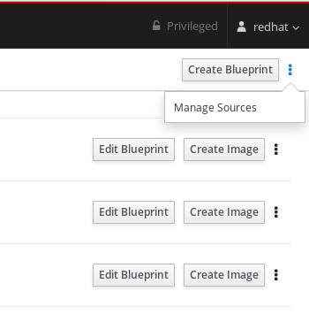
A pop-up window appears with the available sources, their names and descriptions.
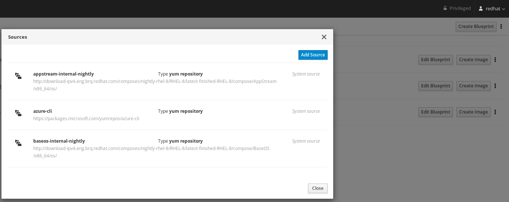
- On the right side of the pop-up window, click the Add Source button.
Add the desired Source name, the Source path, and the Source Type. The Security field is optional.
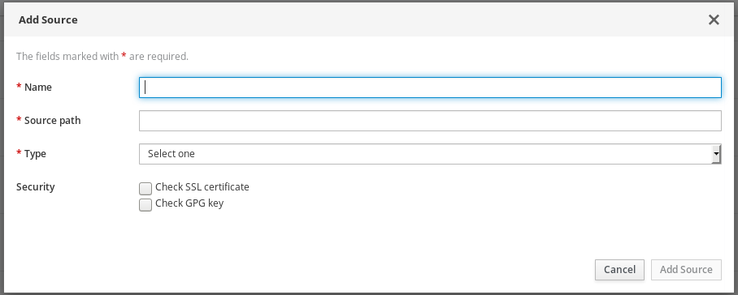
- Click Add Source. The screen shows the available sources window and list the source you have added.
As a result, the new System source is available and ready to be used or edited.
4.7. Creating a user account for a blueprint
The images created by Image Builder have the root account locked and no other accounts included. Such configuration is provided in order to ensure that you cannot accidentally build and deploy an image without a password. Image Builder enables you to create a user account with password for a blueprint so that you can log in to the image created from the blueprint.
Prerequisites
- You have opened the Image Builder interface of the RHEL 8 web console in a browser.
- You have an existing blueprint.
Procedure
Locate the blueprint that you want to create a user account for by entering its name or a part of it into the search box at the top left, and press Enter.
The search is added to the list of filters under the text entry field, and the list of blueprints below is reduced to those that match the search.
Click on the blueprint name to display the blueprint details.
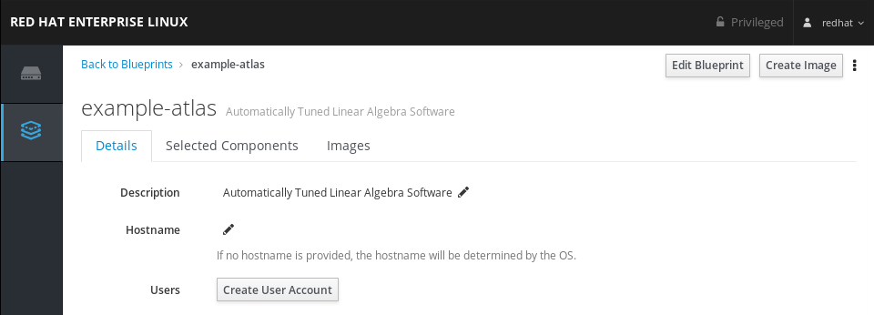Click Create User Account.
This will open a window with fields for user account creation.
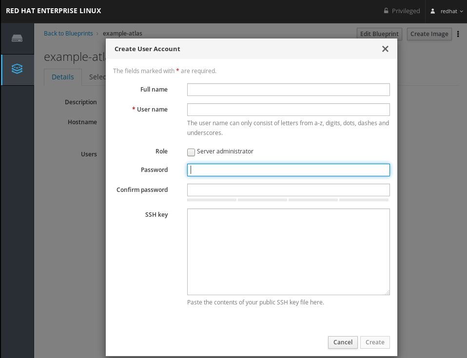- Fill in the details. Notice that when you insert the name, the User name field autocompletes, suggesting a username.
- Once you have inserted all the desired details, click Create.
The created user account appears showing all the information you have inserted.
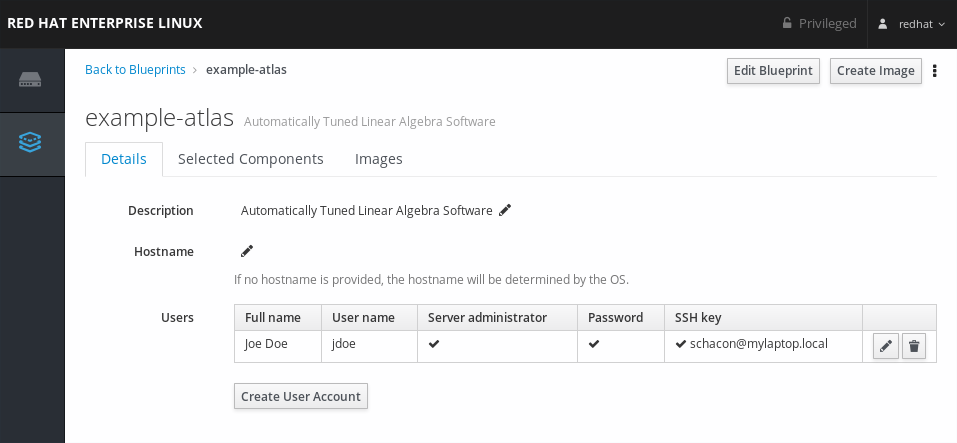- To create further user accounts for the blueprint, repeat the process.
4.8. Creating a user account with SSH key
The images created by Image Builder have the root account locked and no other accounts included. Such configuration is provided in order to ensure that images are secure, by not having a default password. Image Builder enables you to create a user account with SSH key for a blueprint so that you can authenticate to the image that created from the blueprint. To do so, first, create a blueprint. Then, you will create a user account with a password and an SSH key. The following example shows how to create a Server administrator user with an SSH key configured.
Prerequisites
- You have created an SSH key that will be paired with the created user later on in the process.
- You have opened the Image Builder interface of the RHEL 8 web console in a browser.
- You have an existing blueprint
Procedure
Locate the blueprint that you want to create a user account for by entering its name or a part of it into the search box at the top left, and press Enter.
The search is added to the list of filters under the text entry field, and the list of blueprints below is reduced to those that match the search.
Click on the blueprint name to display the blueprint details.
Click Create User Account.
This will open a window with fields for user account creation
Fill in the details. Notice that when you insert the name, the User name field autocompletes, suggesting a username.
If you want to provide administrators rights to the user account you are creating, check the Role field.
Paste the content of your public SSH key file.
- Once you have inserted all the desired details, click Create.
The new user account will appear in the user list, showing all the information you have inserted.
- To create further user accounts for the blueprint,
Additional resources
- For more details on SSH key, see the Using SSH Keys.
Chapter 5. Preparing and Uploading cloud images with Image Builder
Image Builder can create custom system images ready for use in clouds of various providers. To use your customized RHEL system image in a cloud, create the system image with Image Builder using the respective output type, configure your system for uploading the image, and upload the image to your cloud account.
5.1. Preparing for uploading AWS AMI images
This describes steps to configure a system for uploading AWS AMI images.
Prerequisites
- You must have an Access Key ID configured in the AWS IAM account manager.
- You must have a writable S3 bucket prepared.
Procedure
Install Python 3 and the
piptool:# yum install python3 # yum install python3-pip
Install the AWS command-line tools with
pip:# pip3 install awscli
Configure the AWS command-line client according to your AWS access details:
$ aws configure AWS Access Key ID [None]: AWS Secret Access Key [None]: Default region name [None]: Default output format [None]:
Configure the AWS command-line client to use your bucket:
$ BUCKET=bucketname $ aws s3 mb s3://$BUCKETReplace bucketname with the actual bucket name.
Create a
vmimportS3 Role in IAM and grant it permissions to access S3, if you have not already done so in the past:$ printf '{ "Version": "2012-10-17", "Statement": [ { "Effect": "Allow", "Principal": { "Service": "vmie.amazonaws.com" }, "Action": "sts:AssumeRole", "Condition": { "StringEquals":{ "sts:Externalid": "vmimport" } } } ] }' > trust-policy.json $ printf '{ "Version":"2012-10-17", "Statement":[ { "Effect":"Allow", "Action":[ "s3:GetBucketLocation", "s3:GetObject", "s3:ListBucket" ], "Resource":[ "arn:aws:s3:::%s", "arn:aws:s3:::%s/*" ] }, { "Effect":"Allow", "Action":[ "ec2:ModifySnapshotAttribute", "ec2:CopySnapshot", "ec2:RegisterImage", "ec2:Describe*" ], "Resource":"*" } ] }' $BUCKET $BUCKET > role-policy.json $ aws iam create-role --role-name vmimport --assume-role-policy-document file://trust-policy.json $ aws iam put-role-policy --role-name vmimport --policy-name vmimport --policy-document file://role-policy.json
5.2. Uploading an AMI image to AWS
This section describes how to upload an AMI image to AWS.
Prerequisites
- Your system must be set up for uploading AWS images.
-
You must have an AWS image created by Image Builder. Use the
amioutput type in CLI or Amazon Machine Image Disk (.ami) in GUI when creating the image.
Procedure
Push the image to S3:
$ AMI=8db1b463-91ee-4fd9-8065-938924398428-disk.ami $ aws s3 cp $AMI s3://$BUCKET Completed 24.2 MiB/4.4 GiB (2.5 MiB/s) with 1 file(s) remaining ...After the upload to S3 ends, import the image as a snapshot into EC2:
$ printf '{ "Description": "my-image", "Format": "raw", "UserBucket": { "S3Bucket": "%s", "S3Key": "%s" } }' $BUCKET $AMI > containers.json $ aws ec2 import-snapshot --disk-container file://containers.jsonReplace my-image with the name of the image.
To track progress of the import, run:
$ aws ec2 describe-import-snapshot-tasks --filters Name=task-state,Values=active
Create an image from the uploaded snapshot by selecting the snapshot in the EC2 console, right clicking on it and selecting
Create Image: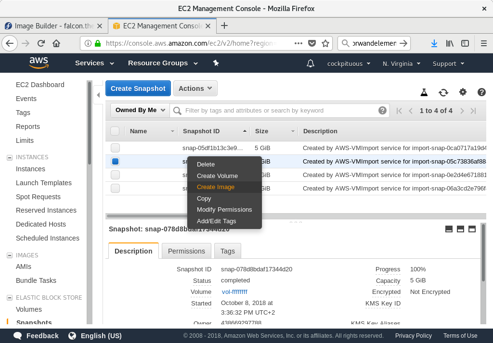
Select the
Virtualizationtype ofHardware-assisted virtualizationin the image you create: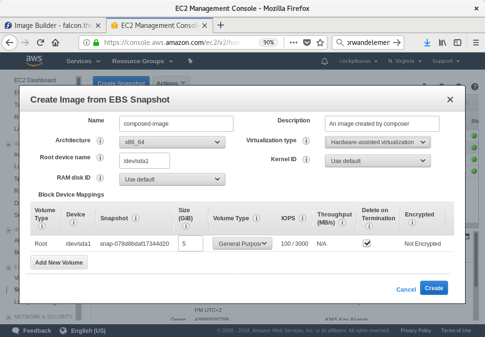
-
Now you can run an instance using whatever mechanism you like (CLI or AWS Console) from the snapshot. Use your private key via SSH to access the resulting EC2 instance. Log in as
ec2-user.
5.3. Preparing for uploading Azure VHD images
This describes steps to upload an VHD image to Azure.
Prerequisites
- You must have a usable Azure resource group and storage account.
Procedure
Install python2:
# yum install python2
Notepython2 package must be installed because since the AZ CLI depends specifically on python 2.7
Import the Microsoft repository key:
# rpm --import https://packages.microsoft.com/keys/microsoft.asc
Create a local azure-cli repository information:
# sh -c 'echo -e "[azure-cli]\nname=Azure CLI\nbaseurl=https://packages.microsoft.com/yumrepos/azure-cli\nenabled=1\ngpgcheck=1\ngpgkey=https://packages.microsoft.com/keys/microsoft.asc" > /etc/yum.repos.d/azure-cli.repo'
Install the Azure CLI:
# yumdownloader azure-cli # rpm -ivh --nodeps azure-cli-2.0.64-1.el7.x86_64.rpm
NoteThe downloaded version of the Azure CLI package may vary depending on the current downloaded version.
Run the Azure CLI:
$ az login
The terminal shows the message 'Note, we have launched a browser for you to login. For old experience with device code, use "az login --use-device-code"' and opens a browser where you can login.
NoteIf you are running a remote (SSH) session, the link will not open in the browser. In this case, you can use the link provided and thus be able to login and autenticate your remote session. To sign in, use a web browser to open the page https://microsoft.com/devicelogin and enter the code XXXXXXXXX to authenticate.
List the keys for the storage account in Azure:
$ GROUP=resource-group-name $ ACCOUNT=storage-account-name $ az storage account keys list --resource-group $GROUP --account-name $ACCOUNT
Replace resource-group-name with name of the Azure resource group and storage-account-name with name of the Azure storage account.
NoteYou can list the available resources using the command:
$ az resource list
Make note of value
key1in the output of the previous command, and assign it to an environment variable:$ KEY1=valueCreate a storage container:
$ CONTAINER=storage-account-name $ az storage container create --account-name $ACCOUNT \ --account-key $KEY1 --name $CONTAINERReplace storage-account-name with name of the storage account.
Additional resources
5.4. Uploading VHD images to Azure
This describes steps to upload an VHD image to Azure.
Prerequisites
- Your system must be set up for uploading Azure VHD images.
-
You must have an Azure VHD image created by Image Builder. Use the
vhdoutput type in CLI or Azure Disk Image (.vhd) in GUI when creating the image.
Procedure
Push the image to Azure and create an instance from it:
$ VHD=25ccb8dd-3872-477f-9e3d-c2970cd4bbaf-disk.vhd $ az storage blob upload --account-name $ACCOUNT --container-name $CONTAINER --file $VHD --name $VHD --type page ...Once the upload to the Azure BLOB completes, create an Azure image from it:
$ az image create --resource-group $GROUP --name $VHD --os-type linux --location eastus --source https://$ACCOUNT.blob.core.windows.net/$CONTAINER/$VHD - Running ...
Create an instance either with the Azure portal, or a command similar to the following:
$ az vm create --resource-group $GROUP --location eastus --name $VHD --image $VHD --admin-username azure-user --generate-ssh-keys - Running ...
-
Use your private key via SSH to access the resulting instance. Log in as
azure-user.
5.5. Uploading VMDK images to vSphere
Image Builder can generate images suitable for uploading to a VMware ESXi or vSphere system. This describes steps to upload an VMDK image to VMware vSphere.
Because VMWare deployments typically does not have cloud-init configured to inject user credentials to virtual machines, we must perform that task ourselves on the blueprint.
Prerequisites
-
You must have an VMDK image created by Image Builder. Use the
vmdkoutput type in CLI or VMware Virtual Machine Disk (.vmdk) in GUI when creating the image.
Procedure
Upload the image into vSphere via HTTP. Click on
Upload Filesin the vCenter: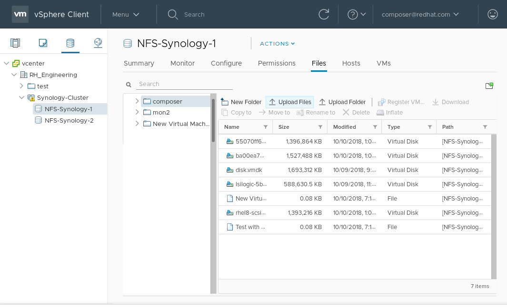
When you create a VM, on the
Device Configuration, delete the defaultNew Hard Diskand use the drop-down to select anExisting Hard Diskdisk image: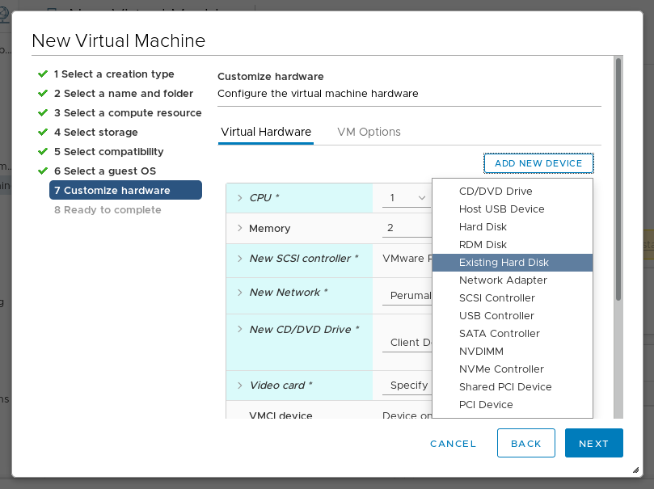
Make sure you use an
IDEdevice as theVirtual Device Nodefor the disk you create. The default valueSCSIresults in an unbootable virtual machine.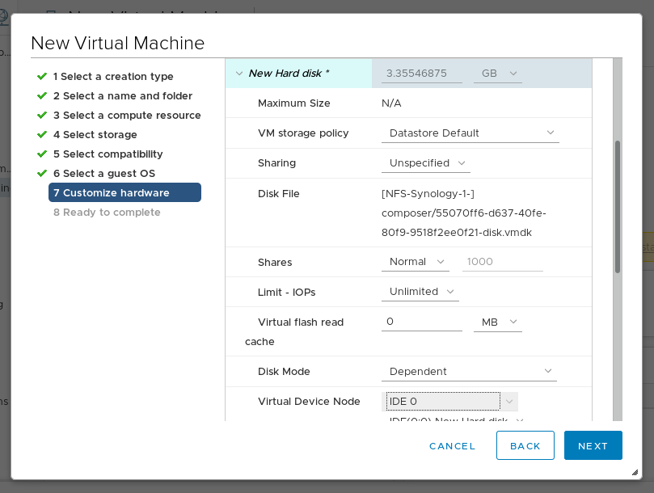
5.6. Uploading QCOW2 image to OpenStack
Image Builder can generate images suitable for uploading to OpenStack cloud deployments, and starting instances there. This describes steps to upload an QCOW2 image to OpenStack.
Prerequisites
You must have an OpenStack-specific image created by Image Builder. Use the
openstackoutput type in CLI or OpenStack Image (.qcow2) in GUI when creating the image.WarningImage Builder also offers a generic QCOW2 image type output format as
qcow2or QEMU QCOW2 Image (.qcow2). Do not mistake it with the OpenStack image type which is also in the QCOW2 format, but contains further changes specific to OpenStack.
Procedure
Upload the image to OpenStack and start an instance from it. Use the
Imagesinterface to do this: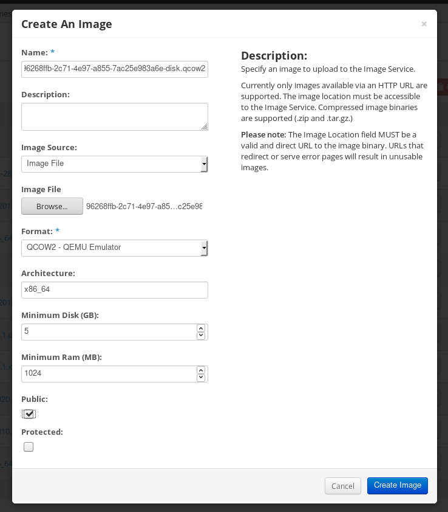
Start an instance with that image:
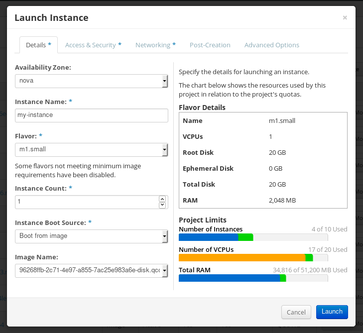
-
You can run the instance using any mechanism (CLI or OpenStack web UI) from the snapshot. Use your private key via SSH to access the resulting instance. Log in as
cloud-user.
5.7. Preparing for uploading images to Alibaba
The custom image verification is optional. Image Builder generates images that conform to Alibaba’s requirements.
This section describes steps to verify custom images that you can deploy on Alibaba Cloud. The images will need a specific configuration to boot successfully, because Alibaba Cloud requests the custom images to meet certain requirements before you use it. For this, it is recommended that you use the Alibaba image_check tool.
Prerequisites
- You must have an Alibaba image created by Image Builder.
Procedure
- Connect to the system containing the image you want to check it by the Alibaba image_check tool.
Download the image_check tool:
$ curl -O http://docs-aliyun.cn-hangzhou.oss.aliyun-inc.com/assets/attach/73848/cn_zh/1557459863884/image_check
Change the file permission of the image compliance tool:
# chmod +x image_check
Run the command to start the image compliance tool checkup:
# ./image_check
The tool verifies the system configuration and generate a report that is displayed on your screen. The image_check tool saves this report in the same folder where the image compliance tool is running.
- If any of the Detection Items fails, correct it by following the instructions. For more information, see link: Detection items section.
Additional resources
- For more details, see Image Compliance Tool.
5.8. Uploading images to Alibaba
This section describes how to upload an Alibaba image to Object Storage Service (OSS).
Prerequisites
- Your system must be set up for uploading Alibaba images.
-
You must have an Alibaba image created by Image Builder. Use the
amioutput type on RHEL 7 or Alibaba on RHEL 8 when creating the image. - You have a bucket. See Creating a bucket.
- You have an active Alibaba Account
- You activated OSS
Procedure
- Log in to the OSS console.
- On the left side Bucket menu, click the bucket you want to upload an image.
- On the upper top menu, click Files tab.
Click Upload. A window dialog opens on the right side. Choose the following information:
- Upload To: Choose to upload the file to the Current directory or to a Specified directory.
- File ACL: Choose the type of permission of the uploaded file.
- Click Upload.
- Choose the image you want to upload.
- Click Open.
As a result, the custom image is uploaded to OSS Console.
Additional resources
- For more details on uploading custom images to Alibaba Cloud, see Upload an object.
- For more details on creating instances from custom images, see Creating an instance from custom images.
- For more details on creating instances from custom images, see Upload an object
5.9. Importing images to Alibaba
This section describes how to import an Alibaba image to Elastic Cloud Console (ECS).
Prerequisites
- You have uploaded the image to Object Storage Service (OSS).
Procedure
- Log in to the ECS console.
- On the left side menu, click Images.
- On the right upper side, click Import Image.
A window dialog opens. Confirm that you have set up the correct region where the image is located. Enter the following information:
- OSS Object Address: See how to obtain OSS Object Address.
- Image Name:
- Operating System:
- System Disk Size:
- System Architecture:
- Platform: Red Hat
Optionally, provide the following details:
- Image Format: qcow2 or ami, depending on the uploaded image format.
- Image Description:
- Add Images of Data Disks:
The address can be determined in the OSS management console after selecting the required bucket in the left menu, select Files section and then click on Details link on the right for the appropriate image. A window will appear on the right side of the screen, showing image details. The OSS object address is in the URL box.
- Click OK.
The importing process time can vary depending on the image size.
As a result, the custom image is imported to ECS Console. You can create an instance from the custom image.
Additional resources
- For more details on importing custom images to Alibaba Cloud, see Notes for importing images.
- For more details on creating instances from custom images, see Creating an instance from custom images.
- For more details on creating instances from custom images, see Upload an object
5.10. Creating an instance of a custom image using Alibaba
You can create instances of the custom image using Alibaba ECS Console.
Prerequisites
- You have activated OSS and uploaded your custom image.
- You have successfully imported your image to ECS Console.
Procedure
- Log in to the ECS console.
- On the left side menu, choose Instances.
- In the top corner, click Create Instance. You are redirected to a new window.
- Fill in all the required information. See Creating an instance by using the wizard for more details.
- Click Create Instance and confirm the order.
As a result, you have an active instance ready for deployment.
Additional resources
- For further details on creating an instance, see Creating an instance by using a custom image.
- For more details on providing details when creating an instance, see Create an instance by using the wizard.